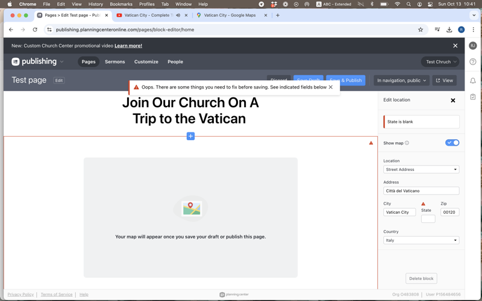
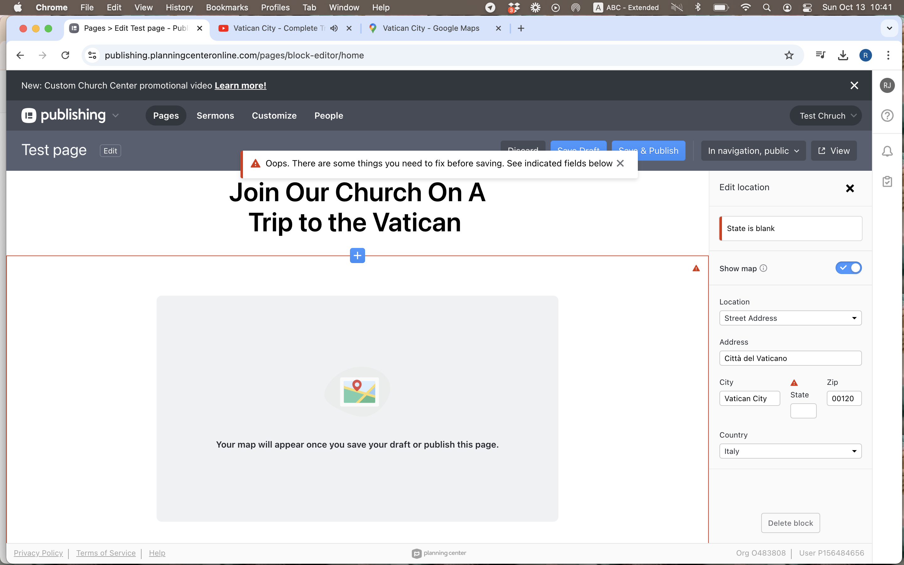
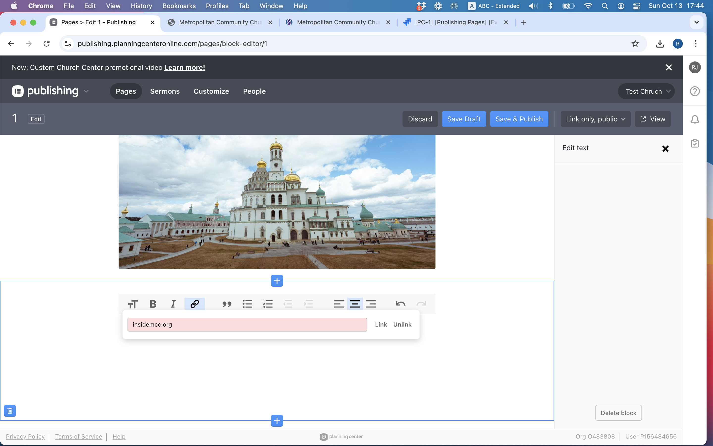
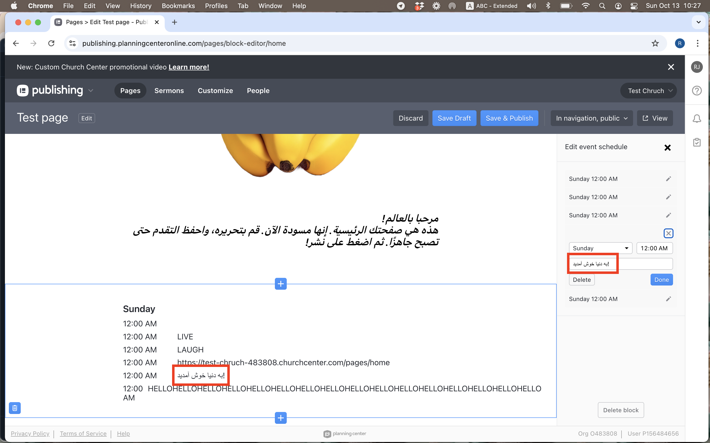

Planning Center Publishing — Custom Pages
October 2024 · QA take-home · Test strategy & exploratory findings
Overview
Take-home exercise for a QA Tester role at Planning Center. Planning Center is a church-management SaaS suite (calendars, giving, registrations, groups, and more). Publishing is the CMS for Church Center — the free app and web experience congregants use to give, sign up for events, and browse church content.
Custom Pages let church admins build no-code pages with a drag-and-drop block editor: welcome pages, bulletins, about pages, and anything else — published to Church Center web and mobile. Blocks include text, media, maps, social links, and deep links into other Planning Center products (Calendar, Giving).
The assignment asked for a written testing plan only. I delivered a ~560-line TEST_PLAN.md with objectives, testing types, environment matrix, block-by-block scenarios, publishing workflows, known challenges, and a two-sprint prioritization. I also used their 30-day trial to run exploratory sessions on live publishing.planningcenteronline.com and logged four defects in Jira plus a supplemental PDF (not required).
What they asked for
Submit a written testing plan focused on the Custom Page feature of Publishing. Custom pages enable churches to create engaging web and app experiences, with multiple configurable blocks providing flexibility for each church’s needs. Your plan should include test objectives, key scenarios, and specific challenges — especially flexibility and unique use cases. There are no strict length requirements, but clarity and sufficient detail matter.
They offered a free 30-day trial to explore firsthand. Submissions were evaluated on:
- Thoroughness — Coverage across all block types, publish states (draft / published / archived), third-party embeds, and integration with Calendar and Giving — not only happy-path “add a text block.”
- Practicality and creativity — A prioritized sprint plan and realistic device matrix instead of claiming every browser × block × permission combination will be tested manually.
- Clarity — Structured sections, official resource links (Zendesk, image sizing, navigation setup), and a clear API → manual → automation → beta rollout.
- Publishing-specific challenges — Drag-and-drop on touch and desktop, Church Center preview vs live parity, membership-based access, QR/URL flows, concurrent admins, and international / RTL content.
Custom Pages guide · API documentation · Image sizing requirements
Deliverables
Test plan structure
- Introduction — Document purpose; Planning Center product suite; how Custom Pages fit into Publishing and Church Center for congregants.
- Testing approaches — Functional (editor + publish flows); non-functional (a11y, performance, security); API contract testing; E2E journeys; regression and beta strategy with automation handoff.
- Test environments — Top U.S. phones, macOS/Windows, Chrome/Safari/Firefox, tablets, desktop resolutions; DevTools, Postman, Playwright/Selenium.
- Team communication — Jira severity workflow, stand-ups, shared Drive docs, GitHub for automation assets.
- Key scenarios & challenges — Page creation edge cases; 11 block types with per-type bullets; PC Calendar/Giving blocks; publish toolbar; performance, cross-platform, and i18n risks.
- Prioritized 2-sprint plan — Sprint 1: core blocks, publish, access; Sprint 2: grid layouts, load testing, cross-product consistency, multi-admin E2E.
- Conclusion — Why exhaustive combinatorial testing fails; what to automate after Sprint 1–2; beta with real church configurations.
- Resource links — Custom Page guide, API overview, image sizing, navigation setup, archive/restore, hide-from-nav articles.
Testing approaches
The plan treats Custom Pages as several surfaces at once: the admin block editor, published Church Center web and app views, backend APIs, and live integrations with Calendar and Giving. It proposes a layered rollout — API checks first, then manual and session-based exploratory testing, then automation for stable regression paths, then a beta period with real church configurations.
Functional
Verify each feature behaves per requirements in both the editor and congregant-facing output.
- Create new pages; add text, images, video, social, section dividers
- Drag-and-drop reorder across mouse, trackpad, and touch
- Embed YouTube, maps, third-party content
- Integrate Calendar, Giving, and other PC products on one page
- Discard, Save Draft, Save & Publish; verify Church Center view
- Navigation, QR code, URL copy, membership access restrictions
- Archive, restore, hide from nav while keeping title searchable
Non-functional
UX, accessibility, device states, media performance, and security around restricted content.
- UI responsiveness and editor smoothness
- Accessibility — screen readers, contrast, keyboard paths
- Layout under dark/light mode, airplane mode, split screen, throttled network, low battery
- Cross-browser and top mobile devices in the U.S.
- Image load performance (700px+ width on mobile per requirements)
- Heavy pages with video and large images under load
- Security of restricted pages — no bypass via email/phone changes
API
Confirm front-end actions match backend state — especially publish, access rules, and integration payloads.
- Endpoint functionality and expected responses
- Front-end / back-end data consistency
- Error handling and meaningful messages for invalid requests
- Performance under normal and peak load
- Auth and authorization on sensitive endpoints
- Tools: Postman (manual), Jest/Mocha (proposed automation)
End-to-end
Validate full admin-to-congregant workflows after individual areas pass.
- Design page → add PC blocks → Save & Publish → add to Church Center navigation → open as congregant
- Restricted pages: visible in nav for eligible members, blocked for others; title still discoverable where required
- Re-run journeys after each release to catch workflow regressions
Regression & beta
Protect stable paths while leaving room for exploratory work on new blocks.
- Automate repeatable functional tests (Playwright or Selenium) once charters are reviewed with dev and QA leads
- Re-test third-party embeds when YouTube, map APIs, or other external services change
- Continue manual exploratory passes on new features — automation misses obscure layout and i18n defects
- Beta release to selected churches for real-world configurations before general availability
Test environments & tools
Environment matrix
- Mobile: top 10 smartphones in the U.S.
- Desktop OS: macOS and Windows
- Browsers: Chrome, Safari, Firefox (top 3 U.S.)
- Tablets: top 5 tablets in the U.S.
- Resolutions: top 5 desktop resolutions for responsive layout
Tools & process
- Chrome DevTools & Android Studio for layout emulation
- Postman for API; Jest/Mocha for API automation (proposed)
- Playwright or Selenium for UI regression (proposed)
- Jira for bugs with severity-based prioritization
- Shared docs (Google Drive) + GitHub for automation code
- Daily or weekly stand-ups during active test cycles
The plan acknowledges exhaustive device × browser × block combinations is unrealistic — prioritization focuses on highest-impact flows first, then automation for stable regression paths.
Publishing workflows in the plan
Beyond individual blocks, the plan dedicates full scenario suites to how pages go live.
- Discard — All changes since last save are undone; page returns to last saved state. Test on slow or offline connections and whether behavior depends on cookies or device permissions.
- Save Draft — Changes persist without going live; small incremental edits; multiple saves in a row; then use Discard and confirm only the last draft boundary is respected.
- Save & Publish — Page becomes viewable on Church Center; confirm it stays unreachable until added to navigation where that applies; published HTML/app view must match the editor preview.
- Page navigation dropdown — QR code resolves to the correct URL on iOS and Android cameras; copy link via keyboard shortcut and right-click; pasted URL matches live page; dropdown UI with many blocks stays ordered and readable.
- User access — Public pages vs membership-restricted; restricted pages may show title in search but block content; zero-access vs full-access edge cases; same user on two devices; rapid toggle between hidden and visible; users who lost access still cannot view archived content; attempt bypass via email or phone number changes on profile.
- Archive / restore — Scenarios tied to official archive and hide-from-nav Zendesk articles (linked in test plan resources).
- Concurrent admins — Two staff editing one page at the same time — conflict messaging, overwrite behavior, and data loss risk.
Two-sprint execution model
After defining scenarios, the plan prioritizes into two 1–2 week sprints so a small QA team can ship meaningful coverage before chasing edge cases.
Sprint 1 — Core functionality (1–2 weeks)
- Create pages with varied titles (length, multilingual, empty, linked titles)
- Drag-and-drop every block type; edge case ~12 blocks per page
- Text, image, button, video, location blocks — happy paths and validation
- Video URLs and embed codes (YouTube, Vimeo, Boxcast)
- Calendar block — up to six events, past events dropping off, canceled events
- Giving block — fund links and cross-product data consistency
- Save draft, publish, discard end-to-end
- Access restrictions, visibility (public / limited / hidden), archive and restore
Sprint 2 — Advanced & cross-platform (1–2 weeks)
- Grid block — 1–3 columns, mobile vs desktop column rules, max items, spacing
- Complex layouts mixing many block types on one page
- Load times with multiple high-res images and embedded video on slow networks
- Simulated high user load on published pages
- Top 3 iOS/Android devices + top 3 desktop browsers
- Data consistency between Custom Pages and Calendar, Giving, and other PC products
- Simultaneous admin editing; full E2E journeys from create → publish → congregant access
Page creation scenarios
Before block-level testing, the plan covers how pages themselves are created and edited — because church admins rarely use a single “template” layout.
- Page titles at various lengths; multilingual and RTL input in title fields
- Pages created without titles; titles that contain hyperlinks
- Combining many block types on one page; edge case near the ~12-block recommendation
- Drag-and-drop with mouse, trackpad, and stylus across desktop and touch devices
- Two admins editing the same page simultaneously — conflict handling and last-write behavior
Block-by-block scenarios
Each block type has a dedicated subsection in TEST_PLAN.md. Below is the level of detail from the plan (not abbreviated to one line per block).
Button
- Hyperlink attached to button opens correct destination on tap/click
- Valid and invalid URL inputs; varied domain extensions
- URL length limits and shortened URLs (bit.ly, etc.)
- Whether link styling matches between draft preview and published Church Center page
Contact
- Phone numbers with different delimiters and country codes
- Invalid contact data — error messaging and whether publish is blocked
- Tap-to-call and tap-to-email open the correct native apps
- Multiple contact blocks on the same page without layout breakage
Event schedule
- Past and future dates; invalid date handling
- Description length boundaries; hyperlinks and emojis inside descriptions
- Local time zone display; suggestions for “current” date/time when adding events
- Layout and aspect ratio on the published page; multiple schedule blocks on one page
- Data consistency with Planning Center scheduling elsewhere in the suite
- RTL titles with punctuation — validated in trial as PC-4
Image (called out as high-focus in the plan)
- Select from device, saved media library, and Unsplash integration
- Library storage limits; add/delete files; supported file types
- Large uploads — speed, reliability, and behavior when upload is interrupted
- Minimum width rules (700px on mobile per official sizing guide); reject or resize out-of-spec images
- User-friendly errors for wrong type or dimensions; corrupt file handling without hanging the editor
- Pages with several images near max file size across browsers and resolutions
- Hyperlink on image acting as a button — URL formats, load times, appearance change when link added
- Unsplash search relevance and whether suggested images respect size restrictions
Location
- Varied address formats; valid vs invalid addresses
- Map API integration — satellite view, zoom, directions
- Map readability, resolution, and aspect ratio on published pages
- Countries without states — state field should not block publish (PC-1 on trial)
Section header
- Background image file types and size limits; cropping on different viewports
- Buttons embedded in headers; header text length limits
- Multiple section headers on one page
Social
- Facebook, Twitter/X, Instagram, TikTok, YouTube — valid profile URLs
- Invalid or broken links; shortened URL formats
- Icon alignment and responsiveness on mobile vs desktop
- Redirect to correct platform when tapped; stacked social blocks
- Draft vs published appearance of icons and links
Video
- Valid/invalid URLs and embed codes for YouTube, Vimeo, Boxcast
- Playback, buffering, and controls (play, pause, volume, fullscreen) across browsers
- Responsive embed sizing; captions and accessibility on embedded players
- Clear error copy when URL or embed is rejected
Grid
- Mix of buttons, images with hyperlinks, and text in 1-, 2-, and 3-column layouts
- Separate column counts for mobile vs desktop views
- Item proportions, spacing, and overlap when resizing; broken links inside grid cells
- Accessibility for tappable grid items; performance at maximum recommended items
- Pressure-test beyond the ~12-item-per-block guidance
Calendar (Planning Center block)
- Up to six events displayed; behavior at the limit
- Past events dropping off automatically; speed of removal for repeating weekly events
- Whether users can RSVP or open event details from the block
- Canceled events marked or removed appropriately
- Data stays in sync with events created in Calendar elsewhere in Planning Center
Giving (Planning Center block)
- Every fund available in Giving can be linked from the block
- Link redirects to the correct fund page
- Fund names and amounts match the Giving product — no stale data on Custom Pages
Known challenges addressed
The assignment specifically asked for challenges churches might hit — not only “does the button work.” The plan calls these out before the sprint prioritization.
Flexibility & unique church layouts
Every congregation configures pages differently: sermon archives with embedded video, multi-campus location blocks, bilingual welcome text, giving campaigns beside event calendars. Testing must cover unusual combinations of blocks and permissions, not a single demo page.
Performance & scalability
Balancing rich media with fast load times on mobile and throttled networks. Bottlenecks often appear only with several high-resolution images, embedded livestreams, or many blocks on one page — scenarios called out for Sprint 2 load testing.
Cross-platform consistency
Uniform experience between the admin editor, Church Center web, and the mobile app. Grid column rules, image full-bleed on phone, and video controls must be verified on both desktop browsers and top iOS/Android devices.
Multi-language & RTL
Correct date/time formats and time zones for events; RTL text in drag-and-drop fields; locale-specific address fields. Trial testing surfaced RTL punctuation bugs (PC-4) and international address validation (PC-1) before any formal test cycle.
Integration consistency
Calendar and Giving blocks import live data from other Planning Center apps. Tests must catch stale events, wrong fund links, or content that updates in Calendar but not on the published Custom Page.
Exploratory findings (30-day trial)
During the week of Oct 13, 2024 I exercised the live editor at
publishing.planningcenteronline.com on a MacBook Pro (macOS Big Sur 11.7.10, Chrome 129).
Bugs were filed in Jira (PC-1 through PC-4); access available on request. The company did not require bug reports — these were supplemental.
-
PC-1 Major Location block
International locations still require “State” in address.
Steps: Open block editor → add Location block → set country to one without states (e.g. outside U.S.) → fill all other fields validly → leave state empty → Publish Page.
Expected: State field optional or hidden for countries without states; page publishes with map.
Actual: Error requires state; publish blocked despite valid international address. -
PC-2 Minor Text block
Link field rejects URLs without protocol — no user feedback.
Steps: Text block → link toolbar → enter
insidemcc.org(nohttps://) → save.
Expected: Auto-prefixhttps://or show “Please add a protocol.”
Actual: Link silently rejected; user not told why. -
PC-3 Minor Pages overview
“In Nav” column out of sync with editor after adding page to navigation.
Steps: Create page → Save Draft → Save & Publish → add to nav via Edit Navigation → Save & Publish → open Pages overview table → compare “In Nav” column vs editor dropdown.
Screen recording
Expected: Both show page in navigation (checkmark in table).
Actual: Editor dropdown says in nav; overview table missing checkmark. -
PC-4 Major Event schedule · RTL
RTL paste with exclamation mark reverses punctuation in event titles.
Steps: New page → Event schedule block → paste Arabic or Hebrew title containing
!→ Done.
Expected: Title displays correctly RTL in preview and published page.
Actual: Exclamation mark moves to wrong end of sentence.
Impact: Hurts i18n quality for non-Christian and international faith communities if Publishing expands market.
Evidence
Screenshots from the supplemental bug PDF. PC-4 (RTL event title) is documented in the PDF with reproduction steps; no static screenshot is on this page.



Takeaway
This take-home is test design at product scale: decompose a flexible no-code editor into layers (blocks, publish pipeline, integrations, environments), prioritize what breaks for real churches, and be explicit about what you cannot exhaustively cover.
The trial turned abstract scenarios into concrete defects — international address rules, silent validation, table/dropdown inconsistency, RTL punctuation — the kinds of issues that show up when software built for one audience meets global use. The plan’s proposed path (API → manual charters → automation → beta) mirrors how I would approach QA on a mature SaaS team like Planning Center.